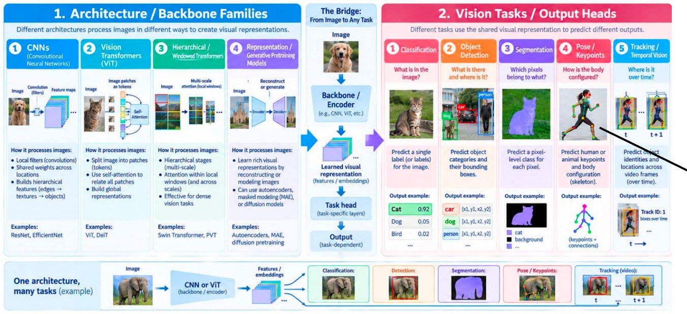
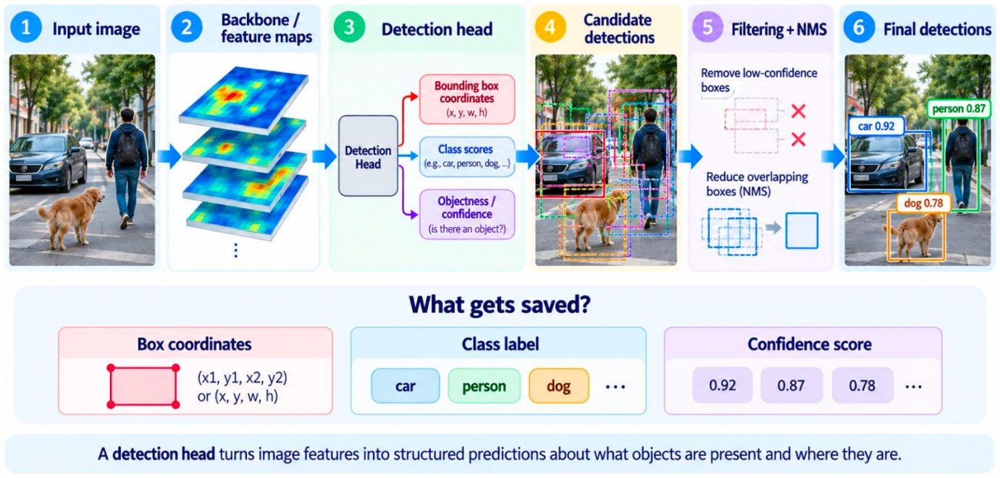
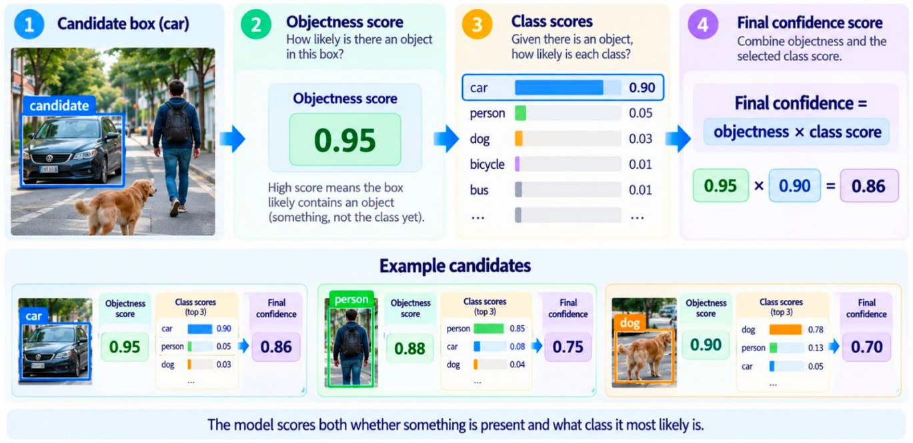
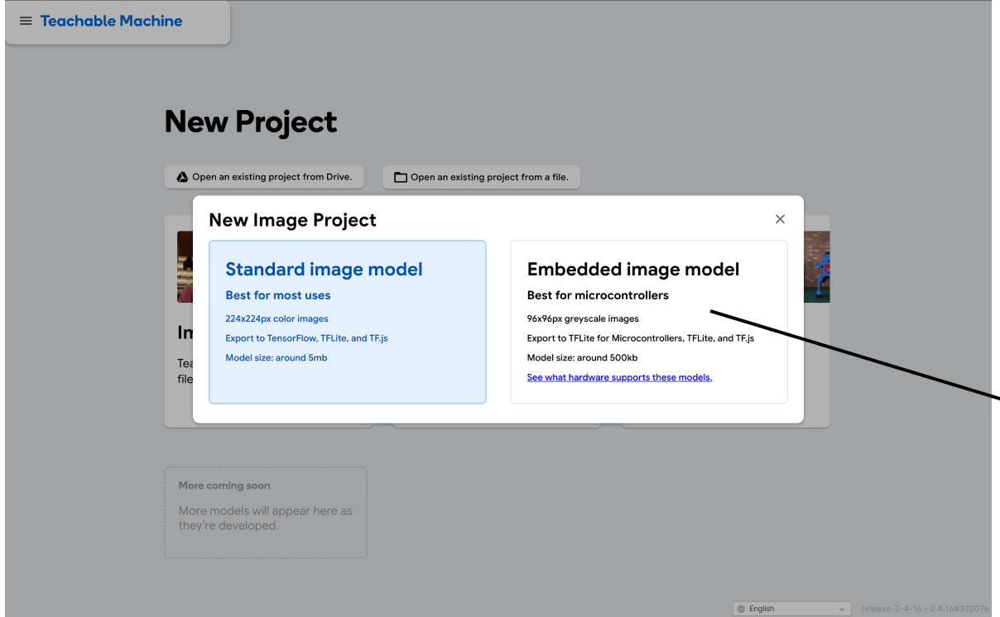
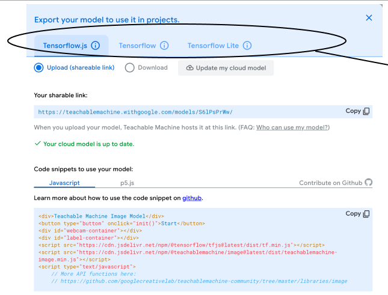
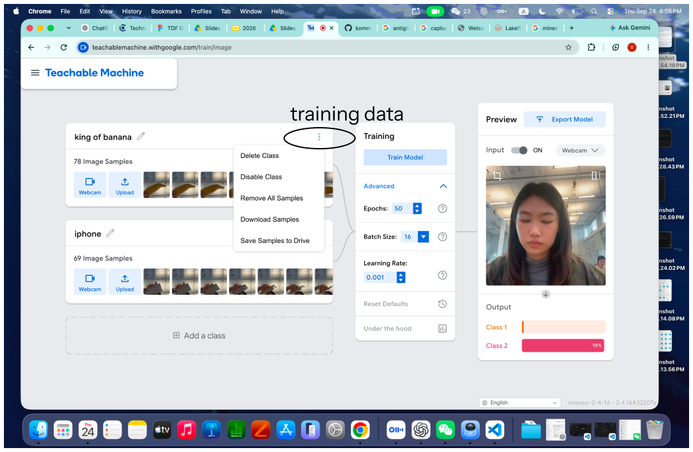

Meta's Segment Anything tool can segment everything in an image, but it needs cloud GPUs to run.

Fig. 2 — Image models: architectures vs tasks.
Combining two cameras (stereo vision) adds depth, turning a flat image into three-dimensional information.
Pose estimation also works on non-human subjects, such as animals.
3D Gaussian Splatting reconstructs a 3D scene from a set of 2D images.
The iPhone's three-camera system is good enough for 3D scanning, for example with Scaniverse.
✦ From pixels to detections
A detector usually starts from a pre-trained backbone, which turns pixels into feature channels. Once the features exist, the detector scans the whole feature map and gives every candidate an object confidence score.

Fig. 3 — Object detection: the big picture.

Fig. 4 — Object detection: scoring each candidate.
IoU (Intersection over Union): when two boxes have a high IoU, they probably mark the same object.
✦ Preparing training data
Keep the data evenly distributed across classes.
A 10-second video means roughly 300 frames to label (at 30 fps).
Similar existing data can be reused by changing its labels.
Synthetic data: a fake elephant made in Unity can be labeled and used as a dataset, and it works surprisingly well. Labeling is even easier in Unity because it can be automated: the 3D model already has its joints defined.
✦ Reflection
Some of the glossary terms still feel obscure to me.
I want to build the agent around my own workflow.
I keep asking how changing the instructions could give me a better agent.
Thursday
✦ Teachable Machine

Fig. 5 — The embedded image model is built for microcontrollers (very small computers).

Fig. 6 — Export options: TensorFlow.js, TensorFlow, and TensorFlow Lite for small devices.

Fig. 7 — Training data for two classes, with the live preview.
For homework, I trained two classifiers in Teachable Machine, one for objects and one for poses, and turned each into a webcam demo that runs in the browser.
Object classifier
Classifies the whole webcam image. Trained on 314 images.
Both demos load the published models with TensorFlow.js and run entirely in the browser, with no build step. Webcam frames are not uploaded.
✦ Reflection
I need to summarize my observations, including the limits of the samples (camera, dataset, background) and their diversity. Is there a model that can help with this analysis?
A small brainstorm before each project feels necessary.